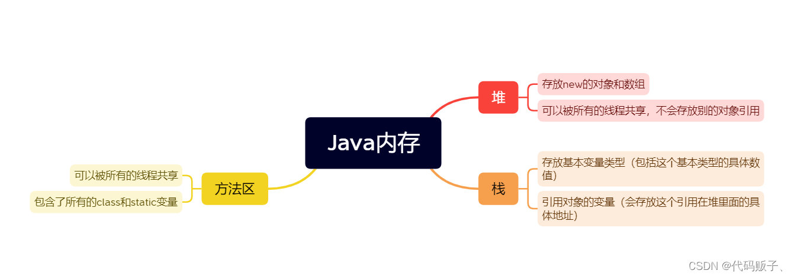
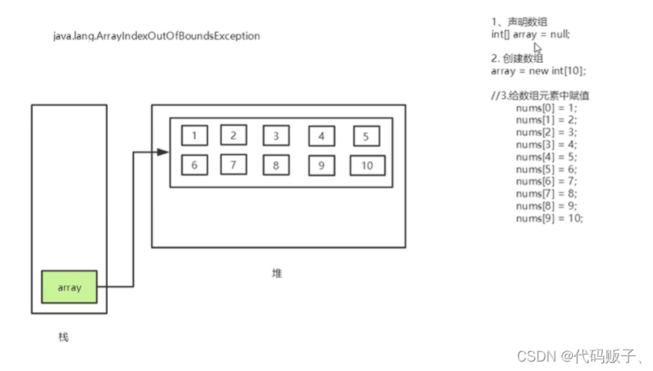
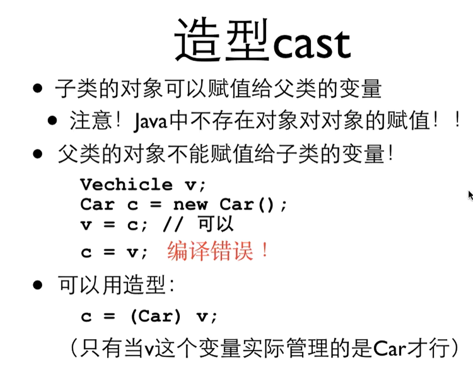
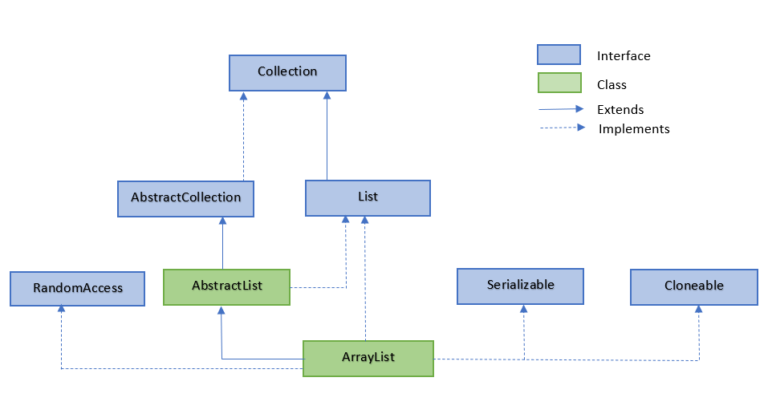
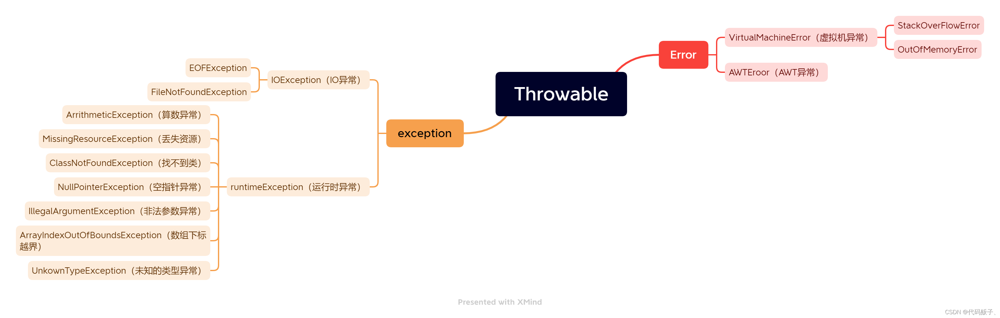
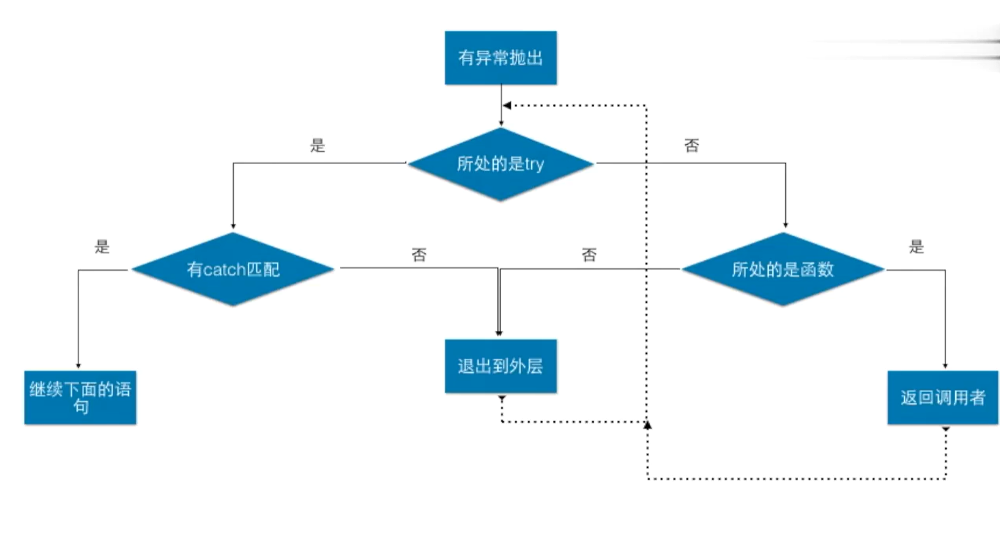

最初见到JAVA就是因为pc端Minecraft必须安装java，已经可见java在多平台运行上的作用了
不过也是因为这个在很长的一段时间里以为它是一个平台或是像flash一样的软件
所以java到底是什么呢小编也很好奇让我们一探究竟吧
待整理
深入理解Java双冒号(::)运算符的使用
arrayList和vector的区别
Vector与CopyOnWriteArrayList简单比较分析
意思就是vector现在基本不用了？
import static java.lang.Math.*;(静态导入)
基本内容
常量
在程序运行期间固定不变的量
final 常量名 = 值；1
final double PI = 3.1415926；
常量的分类：字符串常量、整数常量、浮点型、字符常量、布尔常量、空常量
变量
可以随时发生变化的量，也是Java程序中最基本的储存单元，其要素包括变量名，变量类型和作用域。
数据类型 + 变量名 = 值；（可以用逗号隔开来来声明多个同类型的变量）
变量的作用域
- 类变量：写在类里面的变量，加上satatic的关键字。
- 实例变量：写在方法的外面，类的里面（从属于对象，或者理解为从属于这个类，要通过这个类来使用它，如果不规定初始值则利用的是初始值）并且不需要进行初始化。
- 局部变量：写在方法里面的变量（包括写在主程序里面的方法），必须声明和初始化值。
1
2
3
4
5
6
7
8
9
10
11
12
13
14
15
16
17
18
19
20
21
22
23
24
25
26
27public class HelloWord {
static double saLary = 2500;
//实例变量：写在方法的外面，类得 里面。从属于对象或者是从属于这个类，要通过这个类才能使用它，可以不设置初始值
String name;
int age;
public static void main (String[] args){
//局部变量是写在方法里面的，只对这个方法负责，跳出方法之外就不能被使用
//所有的局部变量必须声明和设置初始值
int i = 10;
System.out.println(i);
//如果实例化对象不给初始值，则会默认输出默认初始化的数值。
HelloWord helloWord= new HelloWord();
System.out.println(helloWord.name);
System.out.println(helloWord.age);
System.out.println(saLary);
}
public void add(){
//这里不能说输出变量i是因为局部变量不在add的方法里面。
System.out.println(i);
HelloWord helloWord= new HelloWord();
//这里的add方法可以调用实例变量，是因为add方法在实例变量的作用域内
System.out.println(helloWord.name);
System.out.println(helloWord.age);
//这里的add方法也作用在类变量的作用域内，所以可以调用类变量
System.out.println(saLary);
}
}Scanner与流程控制
Scanner用法
- 导入sacnner类 import Java.until.*;(写在公共类的来头）
- 创建Scanner对象 Sacnner scanner=new Scanner（system.in);//构造Scanner类的对象sc,接收从控制台输入的信息
- 打印输出提示符号 System.out.println（”提示文字）;
- 获取键盘输入的数据 String src=input.nextlnt()/nextLine();
- 打印输出值：System.out.println(“打印输出的值为:”);
- hasNext()/hasnextLine()来判断是否还有下一个输入。
1 | //new Scanner()为创建一个Scanner对象 |
next()不能得到带有空格的字符串
nextLine()是以Enter为结束符，nextLine()方法返回的是输入回车之前的所有字符。
流程控制
和c没多大区别
增强for
主要用来遍历数组和集合的。
for（声明语句：表达式）{
代码句子；
}
2
3
4
for (int x:i){
System.out.println(x);
}
PYTHON的优良品格学过来了^^
switch表达式
2
3
4
5
6
7
8
9
10
{
case 0 ->"Spring";
case 1 ->"Summer";
case 2 ->"Fall";
case 3 ->"Winter";
default ->"???";
};
// 顺便，条件运算符也有
x<y?x:y;方法的定义和调用
方法的定义：方法包括一个方法的开头和一个方法体。
修饰符 返回值类型 方法名（参数类型 参数名）{
方法体；
return 返回值；
}
修饰符可以有 public static final等
返回值类型如果为void则返回为空，也就是不需要rutern，如果是int等类型需要进行返回，
方法体：包括定义的具体语句以及定义该方法的功能。
方法重载
简单的说就是方法名称相同，方法里面包含的参数类型不同。
方法重载的规则：
- 方法名必须相同。
- 参数名称必须不同。（个数不同，类型不同，排列顺序不同等。）
- 方法的返回值可以相同也可以不同。
- 仅仅是返回值类型不同则不可以完成方法的重载。
实现理论：方法名称相同的时候，编译器会根据方法参数类型的个数，参数类型去逐个匹配，以选择对应的方法，如果匹配失败，编译器会报错。
数组
静态数组
在创建的额时候不指定其长度，直接指定内容。
格式： 数据类型[ ] 数组名字 = new 数据类型[ ]{元素1，元素2，元素3……}；
数据类型[ ] 数据名称 = {元素1，元素2，元素3……}；
注意事项：虽然静态数组没有指出其长度，但是我们可以根据内容来计算出长度。
静态数组的创建过程可以拆分为两个步骤，如果携程省略的格式，那么就不可以拆分成两个步骤。
动态数组
动态数组在进行创建的时候直接指定数据的长度。
格式： 数据类型[ ] 数组名称 = new 数据类型[数组长度]；
<默认值>
| 类型 | 整型 | 浮点型 | 字符型 | 布尔型 | 引用类型 |
| :—-: | :—-: | :——: | :——: | :——: | :———: |
| | 0 | 0.0 | \u0000 | false | null |
※String[] a=new String[]();就是一种引用类型数组，可以通过for-each循环改变它的值
和c中的指针很像 null可以理解为指针没有指向
Java内存


for each（增强for）1
2
3
4
5
6
7public static void main (String[] args) {
int[] arrays = {1,2,3,4,5};
//arrays代表的是一个数组，int array代表的是每个数组里面的每一个元素,但是取不到下标。
for (int array: arrays){
System.out.println(array);
}
}
类与对象的关系
包
package xxx;
表明编程单元被这个包控制
可以使用所有包里的类，包括没有public的
import 包名.类名
可以引入其他包里的类
类
标准命名规定：类名是以大写字母开头的名词 (CamelCase)
类名称 对象名=new 类名称（）;
定义一个标准类（包括如下四个部分）
- 所有的成员变量都用private修饰、
- 每个成员变量都有getxxx()detxxx()方法
- 有一个无参构造 <—这是为何？
- 有一个全参构造
构造器
格式：public 类名称（形参 实参）{
方法体
}
- 和类名必须相同
- 没有返回值
注意点：定义有参构造之后，如果还想用无参构造的话，那么就必须显示的定义一个无参构造。
2
3
4
5
6
7
8
9
10
11
12
13
14
15
16
17
18
//定义一个构造器
//实例化初始值
/*
使用new关键字，必须使用构造器
用来初始化值
*/
//无参构造
public Students(){
//代表的是上面的name
this.name = "张三";
}
//有参构造
//一旦定义了有参构造，无参构造必须显示定义
public Students(String name){
this.name = name;
}
//alt+inset可以快速构造
类变量
static
可以通过类直接访问，而不是只是属于某一个对象
static本身和c里的static差不多
类函数
可以不通过对象直接使用的函数，里面只能对类变量操作
封装、继承、多态
封装
除非有非常正当的理由，所有类中的成员变量都必须设置为private
一旦使用了private进行修饰，本类当中可以随意访问，但是超出了本类就不可以访问了。
间接访问private成员变量，就定义一对getxxx（）setxxx（）方法
protected
自己、同一个包内、子类可以访问
继承
关键字：extends。意思为”扩展“，子类是父类的扩展。
修饰符的级别：public>protected>default（或者是不写,friendly）>private
父类中所有public的东西都是子类public的东西
除了C++，其他语言都不支持多继承，即一个子类只能有一个父类。
this和super关键字
super代表的是在子类中调用父类中的属性或者是方法。
如果父类的构造器换成私有制的关键字属性，那么原本的子类就无法使用super关键字来进行方法的调用。
super();的代码只能放在子类构造器第一行，如果和System.out.println(“子类有参执行了！”);互换位置就会报错。因为new Student();的同时将父类的也new了。
因此我们封装的时候无论一个类怎么写，在写的时候一般只要重写了有参构造，一般都会加上无参构造。
super注意点：
- super是调用父类的构造方法，必须写在构造方法的第一个。
- super必须只能出现在子类的方法或者构造方法中。
- this和super不能同时调用构造方法。
this注意点：
- 代表的是本身调用者这个对象。
- 代表父类对象的应用。
前提：
- 没有继承的前提下也可以使用。
- 只能在继承条件下才可以使用。
构造方法：
this（）；调用的是本类的构造。
super（）；调用的是父类的构造。
向上造型
- 拿一个子类的对象，当做父类的对象来用
- 向上造型是默认的，不需要运算符
- 向上造型总是安全的

多态
当通过对象变量调用函数的时候，调用哪个函数这件事情叫做绑定
- 静态绑定：根据变量的声明类型来决定
- 动态绑定：根据变量的动态声明来决定
在成员函数中调用其他成员函数也是通过this这个对象来调用的
->所有的成员函数的调用都应该被看作是一种动态绑定
覆盖Overrride
子类和父类中存在名称和参数表完全相同的函数，这一对函数构成覆盖关系
通过父类的变量调用存在覆盖关系的函数时，会调用变量当时所管理的对象所属的类的函数，必须是public1
2
3
4
5//表明下面一行的函数是覆盖了父类的函数，函数名字，参数表必须一样，且必须是public
public boolean equals(Object obj){
CD cc = (CD)obj; //向下造型
return artist.equals(cc.artist);
}
多态成员变量：编译运行看左边
2
System.out.println(f.num);//f是Fu中的值，只能取到父中的值多态成员方法：编译看左边，运行看右边
2
System.out.println(f1.show());//f1的门面类型是Fu,但实际类型是Zi,所以调用的是重写后的方法。
https://blog.csdn.net/qq_41679818/article/details/90523285
https://www.runoob.com/java/java-polymorphism.html
Object类
所有的类都是继承自Object的
Object的函数
- toString()
- equals()
…
public String toString(){
return xxxxx;
}
需要转换为字符串时主动调用此函数
泛型容器类
ArrayList<>

.add(,index) .get() .set() .size() .remove()
Collection sort()排序1
2
3
4
5
6
7
8
9
10
11
12
13
14import java.util.ArrayList;
import java.util.Collections; // 引入 Collections 类
public class RunoobTest {
public static void main(String[] args) {
ArrayList<String> sites = new ArrayList<String>();
sites.add("Weibo");
sites.add("Google");
Collections.sort(sites); // 字母排序
for (String i : sites) {
System.out.println(i);
}
}
}
forEach1
2
3
4
5
6
7arraylist.forEach(Consumer<E> action)
//e.g.
numbers.forEach((e) -> {
e = e * 10;
System.out.print(e + " ");
});// 将 lambda 表达式传递给 forEach
以上实例中，我们将匿名函数 lambda 的表达式作为 forEach() 方法的参数传入，lambda 表达式将动态数组中的每个元素乘以 10，然后输出结果。
Lambda表达式
Lambda表达式的语法：1
2
3(parameters) -> expression
或
(parameters) ->{ statements; }parameters 是参数列表，expression 或 { statements; } 是Lambda 表达式的主体。如果只有一个参数，可以省略括号；如果没有参数，也需要空括号。1
2
3
4
5
6//使用 Lambda 表达式计算两个数的和
MathOperation addition = (a, b) -> a + b;
//调用 Lambda 表达式
int result = addition.operation(5, 3);
System.out.println("5 + 3 = " + result);
在上面的例子中，MathOperation 是一个函数式接口，它包含一个抽象方法 operation，Lambda 表达式(a, b) -> a + b实现了这个抽象方法，表示对两个参数进行相加操作。1
2
3
4
5
6
7
8
9
10// 传统的匿名内部类
Runnable runnable1 = new Runnable() {
public void run() {
System.out.println("Hello World!");
}
};
// 使用 Lambda 表达式
Runnable runnable2 = () -> System.out.println("Hello World!");
HashSet<>
这是一个数学概念上的集合
HashMap
似乎就是python中的字典 key&value
所有的类型都必须是对象
Integer(√) int(×)
.put(k,v) .get(k) .keySet()->把所有的key做成一个HashSet
hashmap的遍历：1
2
3for(Integer k: hm.keySet()){
String v = hm.get(k);
}
如何写出一个良好的代码
对代码做维护的时候最能看出码的质量
消除代码复制
重复的代码使用函数多次运行
用封装来降低耦合
类和类之间的关系称作耦合
耦合越低越好，保持距离是形成良好代码的关键
—->各类各自进行分工
可拓展性
- 用接口来实现聚合
在类内实现新方法，把细节隐藏在类内部 - 用容器来实现灵活性
用Hash来实现（虽然会增加初定义时的操作麻烦，但是收益是巨大的 - 以框架 + 数据来提高可拓展性
- 定义一个Handler来处理命令
- 用Hash表来保存命令和Handler之间的的关系
StringBuffer
使用String的情况1
2
3
4
5
6
7
8
9
10
11
12public String getExitDesc(){
String ret = "";
if( northExit != null )
ret += "north";
if( eastExit != null )
ret += "east";
if( westExit != null )
ret += "west";
if( southExit != null )
ret += "south";
return ret;
}
string是一个immutable的类型，对系统的开销很大
一般不会这样写
StringBuffer的情况1
2
3
4
5
6
7
8
9
10
11
12public String getExitDesc(){
StringBuffer sb = new StringBuffer();
if( northExit != null )
sb.append("north");
if( eastExit != null )
sb.append("east");
if( westExit != null )
sb.append("west");
if( southExit != null )
sb.append("south");
return sb.toString();
}
- .append()
- .toString()
抽象函数/抽象类
- 抽象函数：表达概念无法实现具体代码的函数
抽象类：表达概念无法构造出来的类
带有abstract修饰符的函数
- 有抽象函数的类一定是抽象类
- 抽象类不能制造对象，但是可以定义对象
- 任何继承了抽象类的非抽象类的对象可以付给这个变量
实现抽象函数
- 继承自抽象类的子类必须覆盖父类中的抽象函数
- 否则自己成为抽象类
数据与表现分离
接口
- 接口是纯抽象类
- 所有的成员函数都是抽象函数
- 所有的成员变量都是 public static final
- 接口规定了长什么样，但不管里面有什么
- interface和class是同级的
- 接入接口：implements
面向接口的编程方式
控制反转/注入反转
- 由按钮公布一个守听者接口和一对注册/注销函数
- 你的代码实现那个接口，将守听者对象注册在按钮上
- 一旦按钮被按下，就会反过来调用你的守听者对象的某个函数
以JButton为例，JButton发布了ActionListener这个接口和addActionListener这个注册函数
.addActionListener(new ActionListener(){…})
当JButton被按时，调用你实现了AL接口的对象的函数做出动作
↑Swing的消息机制
内部类
- 定义在别的类内部、函数内部的类
- 内部类能直接访问外部的全部资源
- 包括任何私有的成员
- 外部是函数时，只能访问那个函数里final的变量
匿名类
- 在new对象的时候给出的类的定义形成了匿名类
- 匿名可以继承某类可以实现某接口
- SWING的消息机制广泛使用匿名类
如果没有匿名类，在遇到swing这种机制时会有起名困难
MVC设计模式
Model View Control
- 数据、表现和控制三者分离，各负其责
- 模型：保护和维护数据，提供接口让外部修改数据
- 表现：从模型获得数据，根据数据画出表现
- 控制：从用户得到输入，根据输入调整数据
异常

异常机制最大的好处就是清晰地分开了正常的业务逻辑代码和遇到情况时的处理代码
抛出以及捕获异常
- try：抛出异常（尝试着去处理什么东西）。
- catch：捕获异常。
- final：无论有什么异常发生，finally都会被执行（可以运行清理类型等收尾善后性质的语句）。
- throw：当程序发生异常而无法处理的时候，会抛出对应的异常对象。
- throws：throws用来在类中捕获异常信息，标明方法可能抛出的异常。
1
2
3
4
5
6
7
8
9try {
a[10] = 10;
System.out.println("hello");
}catch(ArrayIndexOutOfBoundsExcption e){
Syetem.err.println("error");
throw e;
}catch(...){
...
}
拿到异常对象之后
- String getMessage();
- String toString();
- void printStrace();
- 但是肯定是回不去了，而具体的处理逻辑则取决于你的业务逻辑需要
自定义异常
什么能扔？1
2
3
4
5
6
7
8
9
10
11
12
13
14
15
16
17
18class OpenException extends Exception{
...
//这是一个陈述句，声明这个函数会抛出异常
//你可以声明不会真的抛出的异常
public static void readFile() throws OpenException {
if(open()){
//这是一个祈使句，主动抛出了一个异常
throw new OpenException();
}
}
}
...
try{
readFile();
}catch(OpenException e){
...
} - 任何继承了Thowable类的对象
- Exception类继承了Throwable
- throw new Exception();
- throw new Exception(“Help”);
异常遇到继承
如果要去覆盖父类的函数，不能声明更多的异常
流
- InputStream
- OutputStream
所有的I/O操作都要有Exception文件流
- FileInputStream
- FileOutputStream
- 实际工程已较少使用
- 具体的文件读写往往有更专业的类，比如配置文件和日志文件
流过滤器
1 | DataOutputStream out = new DataOutputStream(new BufferOutputStream(new FileOutputStream("a.dat"))); |
文本流
PrintWriter();
格式化输入输出
对象串行化
后话
0911~0925 两周时间把JAVA基础学完了
有点慢了，期待下个东西学得更快
但是在那之前我要去规范一下我的打字手法…….
接下来学数据库^ ^
one more thing:
这个hexo主题文章右边的目录是sticky的，所以在标题过多时后面的东西就跳转不了
但是我突然发现，本来目录小标题是会折叠的，但是如果你在有#前已经有了一个##，你的折叠就会失效！